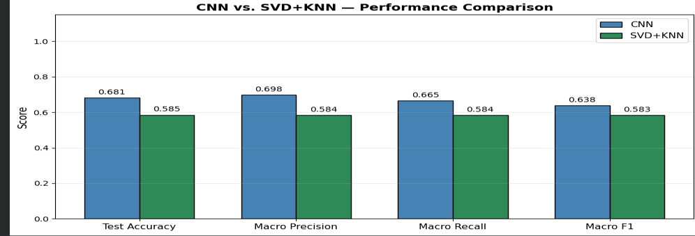
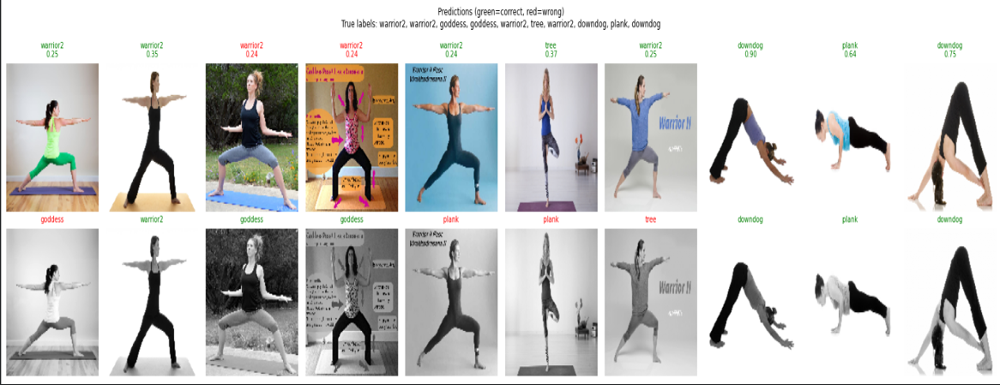

A machine learning project comparing deep learning and classical methods for classifying yoga poses from image data.
The goal of this project is to classify yoga pose images into different pose categories using machine learning.
Yoga pose classification can be used in fitness apps, virtual trainers, healthcare, and posture correction systems.

Performance comparison between CNN and SVD+KNN across accuracy, precision, recall, and F1-score.
The comparison shows that CNN performs better than SVD+KNN because CNN can learn spatial and hierarchical image features directly from the yoga pose images.
CNN Accuracy
Best SVD Components
Yoga Pose Classes

CNN sample predictions. Green labels show correct predictions and red labels show incorrect predictions.
| Model | Strength | Limitation | Overall Result |
|---|---|---|---|
| CNN | Captures complex visual and spatial features | Requires more training time and computation | Best overall performance |
| SVD + KNN | Simple, fast, and interpretable | Loses spatial information after flattening | Lower performance than CNN |
This project demonstrates that CNN is more effective than SVD+KNN for yoga pose classification. While SVD is useful for dimensionality reduction, CNN performs better because it learns important image features directly from the data.
CNN is the better approach for image-based yoga pose classification.